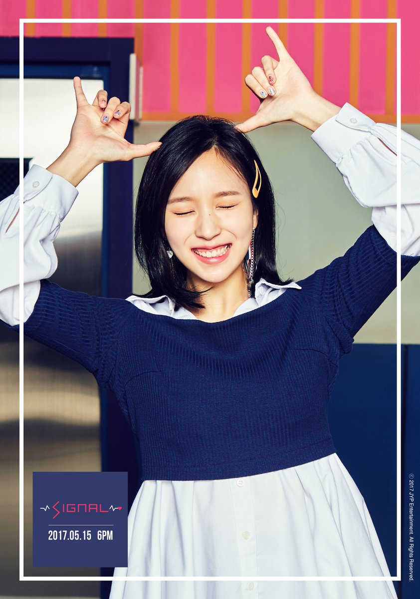

M I N A

Stage Name: Mina
Birth Name: Myoui Mina (名井 南)
Nationality: Japanese
Position: Lead Dancer, Vocalist
Birthday: March 24, 1997
Zodiac Sign: Aries
Official height: 163 cm (5’4″) /Approx. Real Height: 165 cm (5’5″)*
Weight: 46 kg (101 lbs)
Blood Type: A
Mina facts:
She was born in San Antonio, Texas, United States, and moved to Kobe, Japan, when she was a toddler.
Mina’s English name is Sharon Myoui.
Mina got cast while shopping with her mom.
She auditioned in a JYP audition in Japan and joined the trainee program in South Korea on January 2, 2014.
She is the member who had the shortest training period before debuting as a member of Twice.
She got into kpop when she did a cover with her friend using a song by Girls Generation.
She learned ballet for 11 years.
She joined Urizip dance school for more modern dance training.
Mina’s nickname is ‘Penguin’.
Mina’s favorite ballet production is La Corsaire.
Mina’s family has a dog named Rei, who’s male and 10 years old.She’s a really quiet person in public.
Her favorite karaoke song is “Almost is Never Enough!”
Mina likes the movie (series) Harry Potter. She likes Hermione.
Mina can’t eat beondaegi (silkworm pupae).
Mina doesn’t like plum blossom and nattō.
She likes eating snacks.
Mina likes Americano (beverage).
She likes the colors purple and indigo.
When Mina can’t sleep, she goes on her phone.
When Mina is very stressed, she cries.
Mina said she has lots of mood swings & has ups & downs. She still thinks she’s a very bright person.
Her hobbies are looking up restaurants online and shopping.
Mina is the only member who cant do aegyo.
Mina could never ride the Viking and other such rides from theme parks.
Mina’s favorite sentence in Japanese is "The opposite of love is not hate, but indifference."
She appeared in Junho’s “Feel” (Japanese) MV, GOT7’s “Stop Stop It”, Wooyoung’s “Rose” (Japanese) MV, and miss A’s “Only You” MV.
Mina’s ideal type: “Someone who is kind, well-mannered, and playful; Someone who can lead me; Someone decisive.”
Learn More